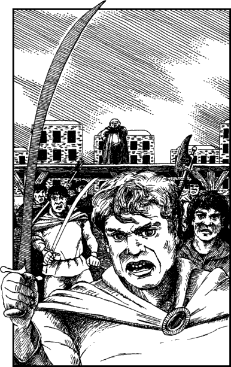

31
A large wooden platform has been erected at the centre of the marketplace upon which twenty men and women are standing side by side with their heads bowed. These poor wretches wear heavy iron manacles which encase their wrists and ankles. Standing behind them are eight hard-faced guards, each with a loop of knotted rope that dangles menacingly from their wrists. The scorching desert sun beats down without mercy upon those in the line, yet if any of them should dare to move but an inch they immediately feel the stinging lash of a rope across their backs.
Over the years you have heard many tales about the slave auctions of Vassagonia, but you had never anticipated that one day you would witness one. This cruel auction fills you with feelings of anger and revulsion as, one by one, the slaves are dragged from the line and sold to the highest bidder. The owner of the slaves is a stout Vassagonian with small piggy eyes and a wart which sits like a ripe brown cherry on the end of his nose. Every time a slave is sold he cackles like a witch when the new owner steps forward to pay the auction price.
You are about to suggest to Oriah that you should leave the square and go back to the horses, when suddenly your Kai senses alert you to danger. Within the crowd there are many pairs of eyes that have been staring avariciously at your beautiful companion. The slave trader has become aware of this and you see him signal to his henchmen. Immediately they enter the crowd and move to encircle you and Oriah. You unsheathe your weapon and command the slaver to call off his men, but he ignores your order. Suddenly the crowd melts away to reveal his six muscular thugs. They are no longer holding knotted ropes; now they hold scimitars and axes with which they slash the air as they advance slowly towards you.
‘Slay him!’ shouts the slaver. ‘Slay the Northlander and bring me the girl!’ You must fight them.

Slave trader’s henchmen: COMBAT SKILL 33 ENDURANCE 36
If you win this combat in four rounds or less, turn to 289.
If you win the combat in five rounds or more, turn to 195.